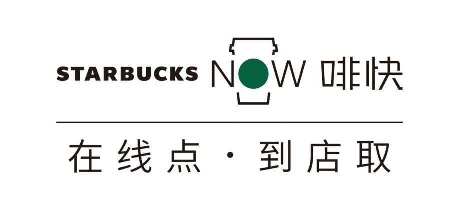
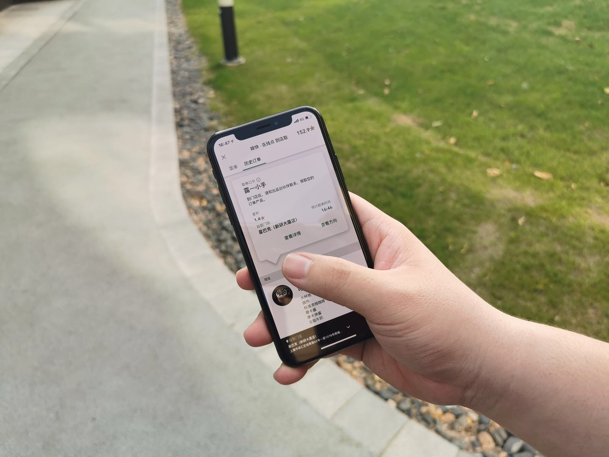

星巴克中国“在线点 到店取”服务 ——“啡快Starbucks Now”全新上线
21/05/2019


京沪两城率先启动，计划逐步推广至全国
星享俱乐部会员专属服务，升级进阶“星”体验
今天（5月21日），星巴克中国的“在线点，到店取”服务——“啡快Starbucks Now”（以下简称“啡快”）在北京、上海两大城市的代表性商圈门店率先上线，这一星巴克会员专属服务将于月底覆盖京沪300家门店，并计划逐步推广至全国。届时，星享俱乐部会员们将能够通过“星巴克APP”一享“啡快”高效便捷、选择多样的星巴克体验。

“我们将‘在线点，到店取’服务取名为‘啡快’，寓意着星巴克在咖啡等饮品品质与服务速度上的双重品牌承诺。”星巴克中国首席执行官王静瑛表示：”此次‘啡快’上线，并不是简单的概念复制或单纯的技术更新，它呈现了星巴克在顾客体验细节上反复打磨与精益求精。继专星送推出以来，星巴克中国始终悉心聆听顾客对于移动点单支付体验的回馈，基于这些回馈不断改进和提升，同步应用于此次全新推出的“啡快”服务上，为我们的顾客进一步深化数字化领域‘第四空间’的星巴克体验。”
星巴克中国始终坚持将匠心结合创新，不断提升数字化创新领域的顾客体验。除了传承专星送“用心，更多一度”的品牌承诺——充分满足个性化需求的深度；对细节毫不妥协的态度；饱含咖啡热情的温度；以及每一杯都将心注入的浓度，随着“啡快”的诞生，星巴克将在又一维度——“速度”上全面提升，为顾客带来更为完善的星巴克体验。

会员专属的进阶“星”体验
伴随着现代都市生活节奏的加快，星巴克的移动点单服务——“啡快”应运而生。“啡快”将为星享俱乐部会员们带来进阶的会员专享服务。加入星享俱乐部，星粉即可以会员身份，享受“啡快”体验，打开星巴克App，选择离自己最近的门店提前下单，便可减少排队等候，到店后直接于出品台领取专属订单，感受这一份高效便捷又兼具高品质的星巴克体验。
值得一提的是，“啡快”服务将与星享俱乐部全面打通，星粉会员还可以同步累积星星、用星星兑换咖啡等其他好礼。“星级”达人们在“星巴克APP”内绑定星礼卡进行消费，每40元便可累积1颗星星，积星速度加快25%，轻轻松松玩转“星星”。未来，“啡快”还将推出多样化会员专属活动，不断提升星享俱乐部会员的星巴克体验。
便捷高效的客制化饮品
一直以来，我们的专业咖啡师都专注为每一位顾客找到其最爱的那一杯，而“啡快”强大的客制化功能便能为伙伴与顾客传递这一份独特连接。星巴克深知，不同的牛奶类型、糖浆类型、甜度、温度、浓缩的选择都会带来一杯完全不同的咖啡体验。因而星巴克“啡快”开放了强大的个性化定制功能，它几乎提供了与门店端同样丰富的个性化选择，力求让所有顾客都根据自己的喜好与要求在线定制自己最爱的那一杯。
20岁的星巴克中国对咖啡专业与顾客体验的不懈追求始终不变。因此，星巴克“啡快”绝不因为“快”而牺牲顾客体验。针对部分对温度或口感有严苛要求的饮品，例如气致系列、绵云冷萃、冰淇淋系列，“啡快”将贴心地提供“到店做”。
创意个性的取单方式
充满创意的取单环节是“啡快”体验的彩蛋。在线点单完成后，你将获得的不是简单的数字编码，而是一个专属的取单口令，只要出示或者报出口令，出品台的伙伴就会为你递上属于你的那一杯。 “今日锦鲤”、“文艺青年”或者“都挺好”等随机生成的口令带来的小确幸，不仅会点亮一瞬心情，更将成为门店伙伴与顾客情感连接的特别瞬间。
星巴克“啡快”的推出，不仅能为顾客带来更便捷的消费体验、满足更多元化消费场景需求，同时亦将通过减少门店排队客流，缩短到店等待时间等实际效果，优化星巴克在店顾客的“第三空间”体验，更好地满足不同顾客与星粉的个性化需求。不断开拓“第四空间”的同时，持续提升“第三空间”体验，是星巴克中国20年来持续探索、努力的方向。今天，这一探索的又一成果，将通过“啡快”，向你真诚呈现。
*注：“啡快”业务覆盖门店不包括星巴克臻选上海烘焙工坊、星巴克臻选北京坊旗舰店、星巴克臻选深圳湾万象城店、星巴克臻选上海世茂广场店、星巴克臻选咖啡·焙烤坊、星巴克臻选咖啡·酒坊。
关于星巴克咖啡公司
星巴克咖啡公司成立于1971年，始终致力于商业道德采购并烘焙世界上高品质的阿拉比卡咖啡。今天，门店遍布全球的星巴克已经成为世界上首屈一指的专业咖啡烘焙商和零售商。通过我们的星级咖啡师，星巴克始终坚持对卓越品质和服务的承诺，遵循我们的指导原则，通过每一杯优质的咖啡为我们的顾客每天营造独特的星巴克体验。欢迎您到访我们的门店，访问星巴克中国官方网站www.starbucks.com.cn或者关注星巴克中国新浪官方微博@星巴克中国，以及星巴克中国微信官方帐号“星巴克中国”，分享独特的星巴克体验。